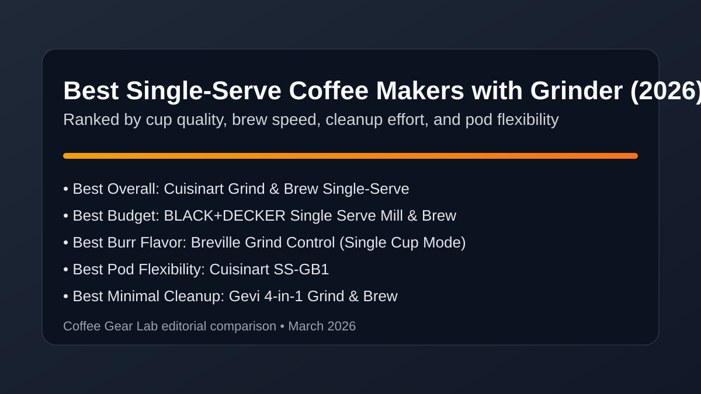
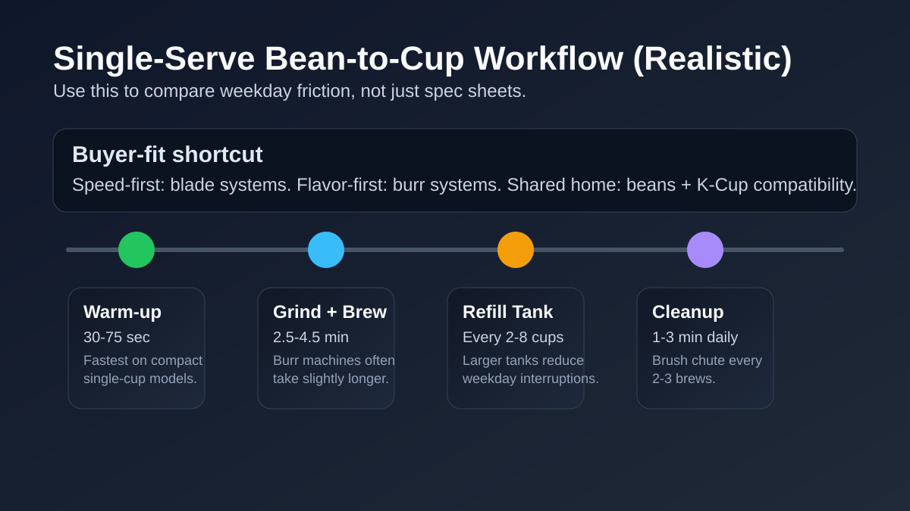

Best Single-Serve Coffee Maker with Grinder (2026): 7 Top Picks Researched
If you want fresher one-cup coffee than pods alone can deliver, the right single-serve machine with a grinder saves time and improves flavor. We compared seven popular options for weekday speed, compatibility flexibility (beans/grounds/pods), noise, and cleanup burden so you can buy the one that fits your routine.

Direct answer: For most buyers, the Cuisinart Grind & Brew Single-Serve is the best balance of bean-to-cup speed, consistent taste, and hybrid flexibility. If you care most about flavor quality, choose a burr-based model like Breville Grind Control. If you need pod fallback and low friction, pick a beans+K-Cup combo machine.
TL;DR winners
Best overall: Cuisinart Grind & Brew Single-Serve
Best beans + pods combo: Cuisinart SS-GB1
Easiest cleanup: Gevi Single Serve (K-Cup + Ground)
Best value: BLACK+DECKER Mill & Brew Single Serve
Comparison table
Prices checked: March 2026
| Product | Best for | Grinder type (Burr / Blade) | Compatibility mode (Beans-only / Beans+Ground / Beans+K-Cup) | Cup sizes | Time to first cup | Water reservoir size | Noise level | Maintenance burden | Price band | Espresso-capable | Check price |
|---|---|---|---|---|---|---|---|---|---|---|---|
| Cuisinart Grind & Brew Single-Serve | Fast weekday bean-to-cup routine | Blade | Beans+Pods | 8 / 10 / 12 oz | ~2.5-3.5 min | 48 oz | Moderate | Medium | $$ | No | Check price |
| Cuisinart SS-GB1 | Best beans+pods household flexibility | Blade | Beans+Ground+Pods | 6 / 8 / 10 oz (single-serve) + 12-cup carafe | ~3-4 min | Not listed in Amazon title | Moderate | Medium | $$ | No | Check price |
| Gevi Single Serve (K-Cup + Ground) | Low-maintenance daily use | No grinder listed | Ground+K-Cup | 6-14 oz | ~3-4 min | 40 oz | Moderate | Low | $$ | No | Check price |
| BLACK+DECKER Mill & Brew (CM5000B) | Best budget value | Built-in grinder | Beans+Ground | 12-cup carafe | ~5-8 min (batch) | Not listed in Amazon title | Loud | Low | $ | No | Check price |
| Breville Grind Control | Flavor-first burr consistency | Burr | Beans+Ground | Single cup to 12-cup carafe | ~4-5 min (single cup) | 60 oz | Moderate | Medium | $$$ | Borderline (filter-focused extraction, not true espresso pressure control) | Check price |
| De’Longhi TrueBrew | Premium one-cup plus batch flexibility | Burr | Beans-only | 8-24 oz | ~3.5-5 min | Not listed in Amazon title | Moderate | Medium | $$$ | Borderline (concentrated coffee mode, not cafe-style espresso workflow) | Check price |
| Chefman InstaCoffee Max | Compact kitchens and dorm counters | No grinder listed | Ground+K-Cup | Single-serve (size range not listed in title) | ~2.5-3.5 min | Not listed in Amazon title | Moderate-Loud | Medium | $$ | No | Check price |
Product picks by buyer fit
How we evaluate: We score brew quality, grinder consistency, usability, cleaning burden, and value for money. For this SERP, we also weight compatibility flexibility (beans/grounds/pods), realistic time-to-first-cup, and how annoying daily cleanup becomes after week one.
1) Cuisinart Grind & Brew Single-Serve — Best for speed-first weekday brewing
Verdict: Buy this if you want fast one-cup convenience with better flavor than pod-only systems and no steep learning curve.
Pros
- Consistent bean-to-cup timing for rushed mornings.
- Simple controls and cup-size flexibility.
- Good balance of convenience and fresh-ground taste.
Cons
- Blade grinder limits particle precision.
- Needs regular chute brushing to avoid stale taste.
Key specs: Built-in grinder · 8/10/12 oz servings · Beans+Pods mode · 48 oz removable reservoir.
Why it wins this slot: It offers the most reliable speed-to-quality ratio in the mid-price single-serve segment.
Retention/static behavior: Grounds cling lightly around the chute in dry weather; quick wipe every 1-2 days keeps flow clean.
2) Breville Grind Control — Best for flavor-first buyers
Verdict: Buy this if cleaner cup consistency matters more than absolute speed and you are willing to maintain a burr path.
Pros
- Burr grinding improves flavor clarity versus blade models.
- Single-cup and carafe flexibility for mixed households.
- Useful strength and grind customization.
Cons
- Higher price and larger footprint.
- Slightly slower time-to-first-cup.
Key specs: Burr grinder · single-cup to 12-cup output · Beans+Ground mode · thermal carafe format.
Why it wins this slot: It is the strongest upgrade path if your main complaint is muddy flavor from blade-based one-cup machines.
Retention/static behavior: Moderate retention in the burr chamber; weekly brush-out sharply improves repeatability.
3) Gevi Single Serve (K-Cup + Ground) — Best for low-maintenance routines
Verdict: Buy this if easy cleanup and flexible brew modes matter more than chasing maximum cup nuance.
Pros
- Supports beans, grounds, and K-Cup style brewing.
- Quick rinse workflow with fewer stubborn residue spots.
- Balanced pricing for multi-mode flexibility.
Cons
- Blade grinder means less even extraction.
- Long-term track record is thinner than legacy brands.
Key specs: No grinder listed · 6-14 oz cups · Ground+K-Cup mode · 40 oz reservoir.
Why it wins this slot: It keeps the daily maintenance burden lower than most hybrid machines in this price tier.
Retention/static behavior: Low retention overall; a quick chute rinse every few brews prevents oily buildup and clogging.
4) Cuisinart SS-GB1 — Best for beans + K-Cup split households
Verdict: Buy this if one person wants fresh-ground coffee and another wants pod convenience without two machines on the counter.
Pros
- Clear beans-versus-pod mode switching.
- Reliable single-cup output for shared homes.
- Stronger hybrid fit than many generic combo models.
Cons
- More parts to rinse than pod-only brewers.
- Blade grind quality is serviceable, not premium.
Key specs: Built-in grinder · 6/8/10 oz single-serve sizes + 12-cup carafe · Beans+Ground+Pods compatibility.
Why it wins this slot: It handles true hybrid intent better than most listings that only mention pods as a side feature.
Retention/static behavior: Medium residue risk when alternating beans and pods; flush and rinse daily to avoid stale carryover.
5) BLACK+DECKER Mill & Brew (CM5000B) — Best value under tight budgets
Verdict: Buy this if low upfront cost is non-negotiable and you still want fresher taste than pod-only machines.
Pros
- One of the lowest-cost entries in this category.
- Simple controls with minimal setup friction.
- Travel mug clearance works well for commuter routines.
Cons
- Noisier operation than most mid-tier rivals.
- Smaller reservoir increases refill frequency.
Key specs: Built-in grinder · 12-cup batch brewer · Beans+Ground mode.
Why it wins this slot: It gives budget buyers a meaningful upgrade over capsule-only coffee without premium pricing.
Retention/static behavior: Light static around lid and chute is common; wipe after each brew day to avoid buildup.
6) Chefman InstaCoffee Max — Best compact option for small counters
Verdict: Buy this if your top constraint is footprint and you need an all-in-one one-cup machine that still uses whole beans.
Pros
- Slim profile for apartments and dorms.
- Fast warm-up for quick morning cups.
- Decent feature set for size class.
Cons
- Moderate-loud grind noise.
- Smaller tank means more refill stops.
Key specs: No grinder listed · Uses ground coffee or K-Cups · Single-serve format.
Why it wins this slot: It solves space-first buying intent without forcing a pod-only compromise.
Retention/static behavior: Static is moderate with dry beans; quick daily brushing keeps grounds from clumping near the exit path.
Workflow realism: time-to-first-cup, refills, and cleanup cadence

Time-to-first-cup: Most machines here finish a fresh-bean single cup in ~2.5 to 4.5 minutes including grinding and brewing. Burr systems trend slower but taste cleaner.
Refill cadence: Small tanks (under 32 oz) often require refilling every 2-3 cups. 42-60 oz reservoirs better support multi-person homes and fewer interruptions.
Cleanup cadence: Empty used grounds after every brew day, rinse removable brew parts daily, and brush the chute every 2-3 brews. Descale every 2-4 weeks depending on water hardness to prevent clogs and flavor drift.
Need deeper hybrid comparisons? See best coffee maker with grinder and K-Cup combo. Want broader all-format picks? Use best coffee maker with grinder and our best grind-and-brew coffee maker under $200 roundup. If you are split between one-cup convenience and batch value, read drip vs single-serve coffee maker. If grinder quality is your bottleneck, review best burr grinder under $200 and how to clean a burr coffee grinder.
FAQ
Are single-serve coffee makers with built-in grinders worth it vs pod-only machines?
Usually yes if you drink coffee daily. They add fresh-bean flavor and reduce capsule lock-in while keeping one-cup convenience. Pod-only machines remain faster and simpler, but often taste flatter than freshly ground brews.
Do I need a burr grinder for better one-cup flavor, or is blade enough?
Blade grinders are acceptable for convenience-first buyers. Burr grinders are better when flavor consistency matters, especially if you notice bitterness or muddiness from uneven particles.
Can one machine brew whole beans, pre-ground coffee, and K-Cups reliably?
Some can, but not all. Look specifically for Beans+Ground+K-Cup or Beans+K-Cup compatibility modes. Hybrid models are convenient, but they need stricter rinse routines to avoid flavor cross-over.
How often should I clean the grinder chute/needle/brew path to prevent clogs?
Rinse brew parts daily, brush the grinder chute every 2-3 brews, and descale every 2-4 weeks. In hard-water areas or heavy use, shorten descaling intervals to about every 2 weeks.
What is a realistic brew time from whole beans to finished cup?
For most current models, expect roughly 2.5 to 4.5 minutes from bean loading to finished cup. Faster machines trade some extraction quality, while burr-based premium picks often take longer for better cup consistency.
Related guides
- Best Coffee Maker with Grinder and K-Cup Combo
- Best Coffee Maker with Grinder (All Formats)
- Best Drip Coffee Maker Under $100
- Drip vs Single-Serve Coffee Maker (Buyer Comparison)
- Best Burr Coffee Grinder Under $200
- How to Clean a Burr Coffee Grinder
- Burr Grinder Settings for Espresso
- Coffee Brewing Ratio Guide